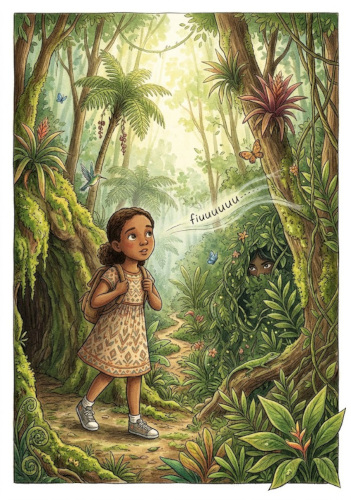
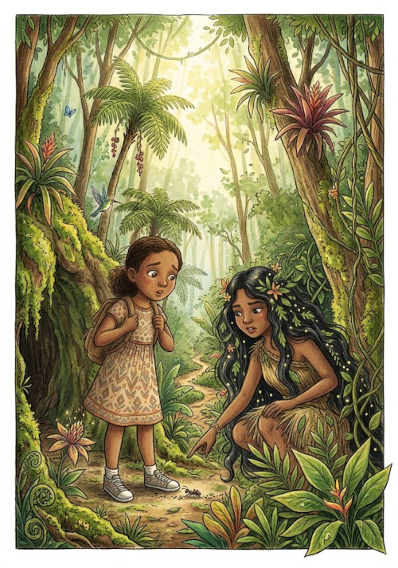
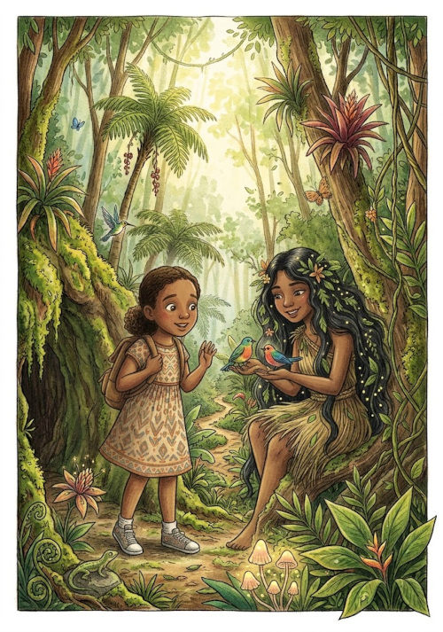
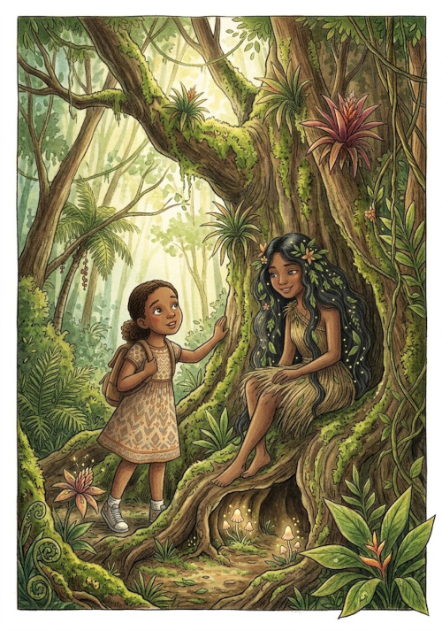
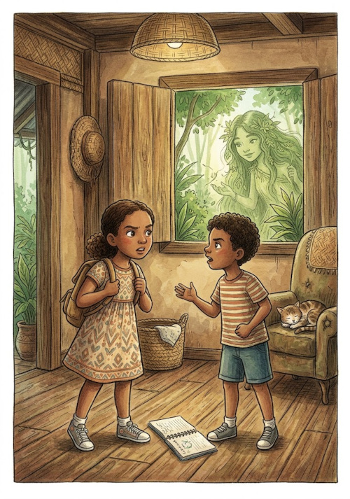
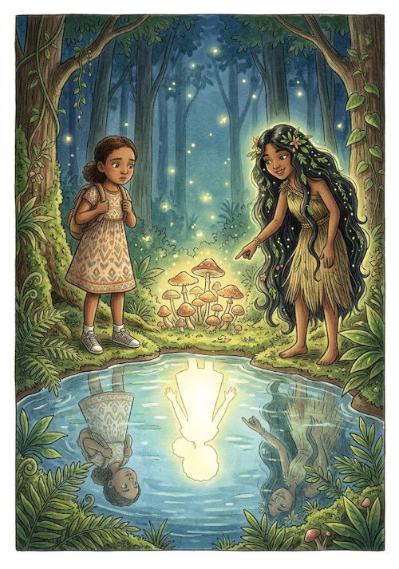
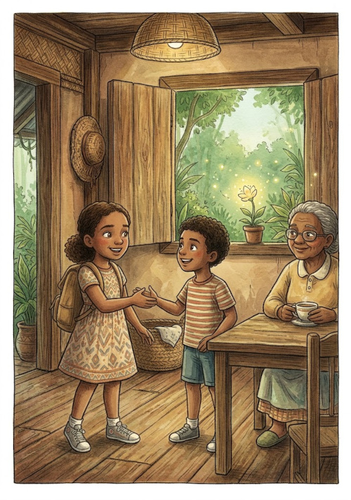

Angélica tem dez anos, uma menina inteligente, curiosa e cheia de perguntas. Ela gosta de brincar, inventar histórias e explorar lugares novos, mas ainda precisa aprender algumas coisas importantes sobre respeito, responsabilidade e sobre o valor de suas próprias raízes.
Durante uma visita à casa de sua avó, Angélica escuta uma antiga história sobre a Cumadre Flozinha, a Mestra da Mata, uma misteriosa guardiã que, segundo os antigos, conhece os segredos das árvores, dos animais, das águas e dos caminhos escondidos da floresta.
Curiosa, Angélica entra na mata procurando descobrir se a história é verdadeira.
Mas a mata não é um lugar comum.
Depois de ouvir um assobio misterioso, Angélica encontra Cumadre Flozinha. Em vez de simplesmente lhe contar os segredos da floresta, a Mestra decide ensinar à menina que ninguém entra verdadeiramente na mata sem primeiro aprender a respeitá-la.
Ao longo de uma viagem que parece acontecer entre o sonho e a realidade, Angélica aprende a entrar e sair da mata com respeito, a observar sem destruir, a ouvir antes de falar, a reconhecer a importância dos ancestrais e a compreender que respeitar seus pais, irmãos e outras pessoas não significa deixar de ser quem ela é.
A maior descoberta, porém, acontece no final:
para conhecer a mata, Angélica precisaria primeiro aprender a conhecer a si mesma.
Capítulo 1: O ASSOBIO ENTRE AS ÁRVORES

Era uma tarde quente na Zona da Mata de Pernambuco.
Angélica estava sentada na varanda da casa de sua avó, balançando os pés enquanto observava as folhas das árvores se mexendo com o vento.
Vó, é verdade que existe uma mulher que mora dentro da mata?
A avó sorriu.
Mulher?
É. A Cumadre Flozinha.
A velha senhora ajeitou os óculos.
Ah... Então você andou ouvindo histórias que não devia ouvir sozinha.
Angélica arregalou os olhos.
Por quê?
Porque algumas histórias são engraçadas. Outras são assustadoras. E algumas ensinam coisas que a gente demora muito tempo para entender.
E a Cumadre Flozinha?
A avó ficou séria.
A Cumadre Flozinha é uma dessas histórias.
Angélica aproximou-se.
Ela existe?
A avó deu de ombros.
Isso você terá que descobrir.
Ela é perigosa?
Para quem respeita a mata, talvez seja apenas uma velha conhecida. Para quem entra destruindo tudo, pode ser uma péssima companhia.
Angélica riu.
Eu não tenho medo.
É justamente aí que mora o perigo respondeu a avó.
No dia seguinte, Angélica caminhou até a entrada da mata.
Não pretendia entrar.
Pelo menos era isso que dizia para si mesma.
Só vou olhar.
Deu três passos.
Depois mais cinco.
Então ouviu:
Fiuuuuuuuuu!
Angélica parou.
Olhou para trás.
Nada.
Olhou para frente.
Nada.
Deve ter sido um passarinho.
Continuou andando.
Fiuuuuuuuuu!
Dessa vez o assobio pareceu vir de trás dela.
Angélica virou-se rapidamente.
E encontrou uma menina.
Ela aparentava ter uns doze anos, embora seus olhos parecessem muito mais antigos.
Tinha cabelos negros, longos e cheios de folhas pequenas.
Você está perdida?
Angélica respondeu:
Não.
A menina sorriu.
Tem certeza?
Tenho.
Então por que está olhando para todos os lados?
Angélica ficou sem resposta.
A menina estendeu a mão.
Meu nome é Flozinha.
Angélica sentiu um arrepio.
Cumadre Flozinha?
A menina fez uma pequena reverência.
Dependendo de quem pergunta.
Angélica respirou fundo.
Você é a Mestra da Mata?
Flozinha sorriu.
Ainda não. Primeiro você precisa aprender a entrar nela.
Mas eu já entrei.
Não.
Como assim?
Flozinha apontou para o chão.
Você apenas passou pela porta.
Angélica olhou para as árvores.
E qual é a diferença?
A Mestra respondeu:
Entrar na mata é caminhar com respeito. Passar pela porta é apenas colocar os pés dentro dela.
Angélica ficou pensativa.
Então... você vai me ensinar?
Flozinha sorriu.
Se você aprender a ouvir.
Eu sei ouvir!
Então fique em silêncio.
Angélica fechou a boca.
Durante alguns segundos, só se ouviu o vento.
Depois vieram os sons dos pássaros.
O movimento das folhas.
Um inseto andando sobre um tronco.
A água correndo ao longe.
Flozinha perguntou:
Agora me diga o que ouviu.
Pássaros.
Mais.
O vento.
Mais.
Angélica fechou os olhos.
Água.
Flozinha sorriu.
Agora você começou a entrar.
Respeitar é aprender a observar e ouvir antes de agir. Quem chega a um lugar acreditando que sabe tudo acaba não aprendendo nada.
Capítulo 2: A PRIMEIRA LEI DA MATA

Flozinha conduziu Angélica por uma trilha estreita.
Primeira regra — disse a Mestra.
Qual?
Não pegue aquilo que não precisa.
Angélica olhou para uma flor muito bonita.
Nem aquela?
Principalmente aquela.
Mas é só uma flor.
Flozinha se agachou.
Para você, talvez seja apenas uma flor.
Tocou delicadamente o solo.
Para a mata, ela pode ser alimento para um inseto.
Apontou para uma abelha.
Para a abelha, pode ser uma refeição.
Depois apontou para uma pequena semente.
Para a floresta, pode ser uma árvore daqui a alguns anos.
Angélica abaixou a mão.
Então eu não posso pegar nada?
Pode. Mas precisa aprender a diferença entre usar e destruir.
A menina continuou caminhando.
Encontrou uma árvore caída.
Essa pode?
Flozinha respondeu:
A árvore já caiu. Agora ela pertence a outro ciclo.
Ciclo?
Na mata, nada simplesmente desaparece.
Flozinha apontou para o tronco.
Pequenos fungos cresciam sobre a madeira.
Formigas caminhavam por dentro das rachaduras.
O que parece morte para você pode ser alimento para outra vida.
Angélica ficou impressionada.
Então a floresta está sempre trabalhando?
Mesmo quando parece estar dormindo.
Mais adiante, encontraram um pequeno riacho.
Angélica teve vontade de jogar uma pedra na água.
Posso?
Por quê?
Porque é divertido.
E se todos os animais que passassem por aqui fizessem o mesmo?
Angélica pensou.
O riacho ficaria cheio de pedras.
E se todos jogassem lixo?
Ficaria sujo.
E se todos cortassem uma árvore?
Angélica olhou para a floresta.
Não sobraria floresta.
Flozinha assentiu.
É assim que começam as grandes destruições: com pequenas ações que cada pessoa acha que não fazem diferença.
Angélica sorriu.
Acho que estou começando a entender.
Não comemore ainda.
Por quê?
Flozinha apontou para o chão.
Você acabou de pisar em uma formiga.
Angélica arregalou os olhos.
Eu nem vi!
Exatamente.
Toda vida tem valor. Respeitar a natureza é compreender que nossas pequenas atitudes podem produzir grandes consequências.
Capítulo 3: OS ANIMAIS NÃO SÃO BRINQUEDOS

Na manhã seguinte, Angélica voltou à mata.
Flozinha estava sentada em um galho.
Você voltou.
Claro!
E trouxe alguma coisa?
Angélica mostrou uma pequena mochila.
Biscoitos.
Para quem?
Para você.
Flozinha riu.
Eu não como biscoito.
Então para os animais.
A expressão de Flozinha mudou.
Não.
Mas eu só queria alimentar os bichinhos.
Os animais da mata sabem procurar o alimento que precisam.
Mas eu quero ajudar.
Flozinha se aproximou.
Ajudar não é fazer aquilo que parece bonito. É fazer aquilo que realmente ajuda.
Angélica guardou os biscoitos.
Naquele momento, um pequeno macaco apareceu em uma árvore.
Angélica sorriu.
Posso chegar perto?
Não.
Só um pouquinho?
Não.
Por quê?
Porque ele é um animal selvagem. A floresta é a casa dele. Você é visitante.
O macaco observou Angélica.
Depois desapareceu entre as folhas.
Ele foi embora.
E fez muito bem.
Eu queria fazer carinho.
Nem todo carinho precisa de toque.
Angélica pensou.
Como assim?
Flozinha respondeu:
Às vezes, amar é deixar o outro em paz.
A frase ficou na cabeça da menina.
Depois encontraram um pássaro com uma asa machucada.
Angélica correu para pegá-lo.
Devagar!
Ela parou.
Flozinha explicou:
Quando encontramos um animal ferido, não devemos agir como se soubéssemos tudo. Precisamos procurar ajuda de adultos e de pessoas que saibam cuidar dele.
Então coragem não é fazer tudo sozinha?
Muito menos.
E o que é coragem?
Flozinha sorriu.
É reconhecer quando você precisa de ajuda.
Respeitar os animais é compreender que eles têm seus próprios espaços e necessidades. Cuidar também significa saber quando pedir ajuda.
Capítulo 4: A ÁRVORE QUE SE LEMBRAVA

No quarto dia, Flozinha levou Angélica até uma árvore enorme.
Seu tronco era tão largo que seriam necessárias várias crianças para abraçá-lo.
Quem plantou essa árvore?
Não sei.
Então ela é velha?
Muito.
Angélica colocou a mão no tronco.
Ela parece guardar alguma coisa.
Flozinha sorriu.
Toda árvore guarda histórias.
Histórias de verdade?
Algumas que podemos descobrir. Outras que somente o tempo conhece.
Angélica ficou em silêncio.
Minha avó também conta histórias.
E você escuta?
Às vezes.
Flozinha levantou uma sobrancelha.
Às vezes?
É que ela conta histórias muito compridas.
Você acha que os antigos falavam demais?
Um pouco.
Flozinha começou a rir.
Talvez você ainda seja jovem demais para entender.
Sentaram-se sob a árvore.
Flozinha disse:
Antes de você existir, outras pessoas já caminharam pelo mundo. Seus avós. Seus bisavós. E antes deles, outras gerações.
Eu não conheci meus bisavós.
Mesmo assim, parte deles chegou até você.
Angélica ficou pensativa.
Como?
Pelas histórias. Pelos costumes. Pelas palavras. Pelos ensinamentos. Pela maneira como sua família prepara comida, trabalha, comemora, enfrenta dificuldades e cuida uns dos outros.
Então os ancestrais vivem nas histórias?
Também.
Flozinha apontou para o coração da menina.
E nas coisas boas que você decide continuar.
Angélica sorriu.
Então eu também posso criar coisas novas?
Claro.
Mesmo respeitando as coisas antigas?
Principalmente.
A menina entendeu.
Respeitar o passado não significava viver preso nele.
Significava aprender com ele.
Honrar os ancestrais não significa copiar tudo o que eles fizeram. Significa reconhecer de onde viemos, aprender com suas experiências e levar adiante aquilo que existe de bom.
Capítulo 5: A BRIGA COM O IRMÃO

Naquela noite, Angélica voltou para casa.
Seu irmão, Gabriel, pegou seu caderno.
Me devolve!
Só estou olhando.
É meu!
Você não manda em mim!
Angélica puxou o caderno.
Gabriel puxou de volta.
O caderno caiu no chão.
Você é muito chato!
E você é mandona!
Angélica entrou no quarto batendo a porta.
Naquela noite, sonhou com a mata.
Quando abriu os olhos, estava novamente diante de Flozinha.
Você brigou com seu irmão.
Angélica cruzou os braços.
Ele começou.
Talvez.
Então eu estava certa.
Não necessariamente.
Mas ele pegou meu caderno!
E você poderia ter pedido de volta sem gritar.
Angélica ficou irritada.
Então a culpa é minha?
Eu não falei isso.
Mas parece.
Flozinha sentou-se ao lado dela.
Uma briga raramente pertence completamente a uma pessoa.
Então o que eu faço?
Aprenda a diferença entre ter razão e querer resolver um problema.
Angélica ficou quieta.
Mas ele me irrita!
Irmãos fazem isso.
Bastante!
Flozinha riu.
E você também deve irritá-lo.
Talvez.
Talvez?
Angélica começou a rir.
Flozinha continuou:
Você não precisa concordar com todos. Precisa aprender a conversar com eles.
E se ele não quiser?
Você pode controlar apenas suas próprias atitudes.
Angélica respirou fundo.
Acho que amanhã vou pedir desculpas.
Pelo quê?
Por ter gritado.
Muito bem.
Mas ele também precisa pedir desculpas.
Então diga isso com calma.
Angélica sorriu.
A senhora sempre tem uma resposta?
Flozinha fez cara séria.
Claro.
Qual?
Não.
Não?
Às vezes eu também não sei.
Angélica caiu na gargalhada.
Ser uma pessoa melhor não significa nunca errar. Significa reconhecer os próprios erros, pedir desculpas quando necessário e tentar fazer melhor da próxima vez.
Capítulo 6: A MENINA QUE QUERIA SER OUTRA

Na última noite, Angélica perguntou:
Flozinha, por que eu sou eu?
A Mestra ficou em silêncio.
Essa é uma pergunta grande.
Eu às vezes queria ser diferente.
Diferente como?
Mais corajosa. Mais bonita. Mais inteligente. Mais parecida com algumas meninas que conheço.
Flozinha olhou para ela.
Você sabe qual é o problema de tentar ser outra pessoa?
Qual?
Você pode passar tanto tempo tentando ser outra pessoa que esquece de descobrir quem você é.
Angélica abaixou os olhos.
Mas eu tenho defeitos.
Todo mundo tem.
E se eu quiser melhorar?
Melhore.
Então eu posso mudar?
Claro.
Mas você acabou de dizer para eu ser quem sou.
Flozinha sorriu.
Ser quem você é não significa permanecer exatamente igual. Significa não ter vergonha da pessoa que está aprendendo a ser.
Angélica ficou em silêncio.
Flozinha continuou:
Você pode aprender a ser mais paciente sem deixar de ser Angélica.
Posso ser mais corajosa?
Pode.
Mais educada?
Deve.
Mais inteligente?
Estude.
Mais bonita?
Flozinha começou a rir.
Isso você não precisa resolver agora.
Angélica riu também.
Então qual é o maior segredo da mata?
Flozinha aproximou-se.
A mata não ensina você a ser perfeita.
Então o que ela ensina?
A crescer.
Ser você mesmo não significa aceitar todos os seus defeitos. Significa conhecer suas qualidades, reconhecer suas dificuldades e ter coragem para crescer sem deixar de ser quem você é.
Capítulo 7: O CAMINHO DE VOLTA

Chegou o momento de Angélica voltar para casa. Ela olhou para Flozinha.
Eu vou encontrar você novamente?
A Mestra sorriu.
Talvez.
Quando?
Quando você precisar lembrar alguma coisa que já aprendeu.
Isso não responde!
Responde o suficiente.
Angélica riu.
Antes de partir, Flozinha lhe ensinou a última lição.
Quando entrar na mata, peça licença.
Angélica assentiu.
Quando caminhar, observe onde pisa.
Sim.
Quando encontrar animais, não os persiga.
Certo.
Quando encontrar plantas, não destrua.
Certo.
Quando encontrar água, não suje.
Certo.
Quando ouvir histórias dos antigos, escute.
Sim.
Quando seus pais falarem com você, ouça com atenção.
Para conhecer a mata, Angélica precisaria primeiro aprender a conhecer a si mesma.